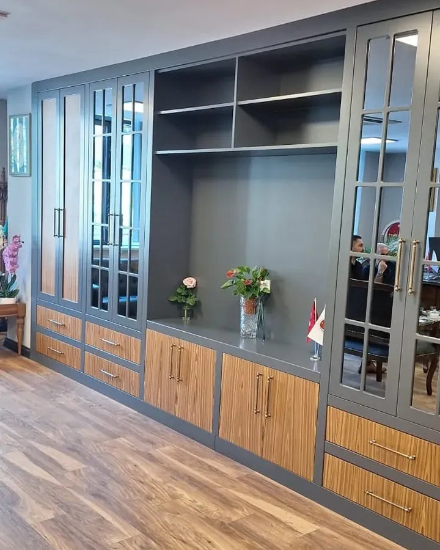
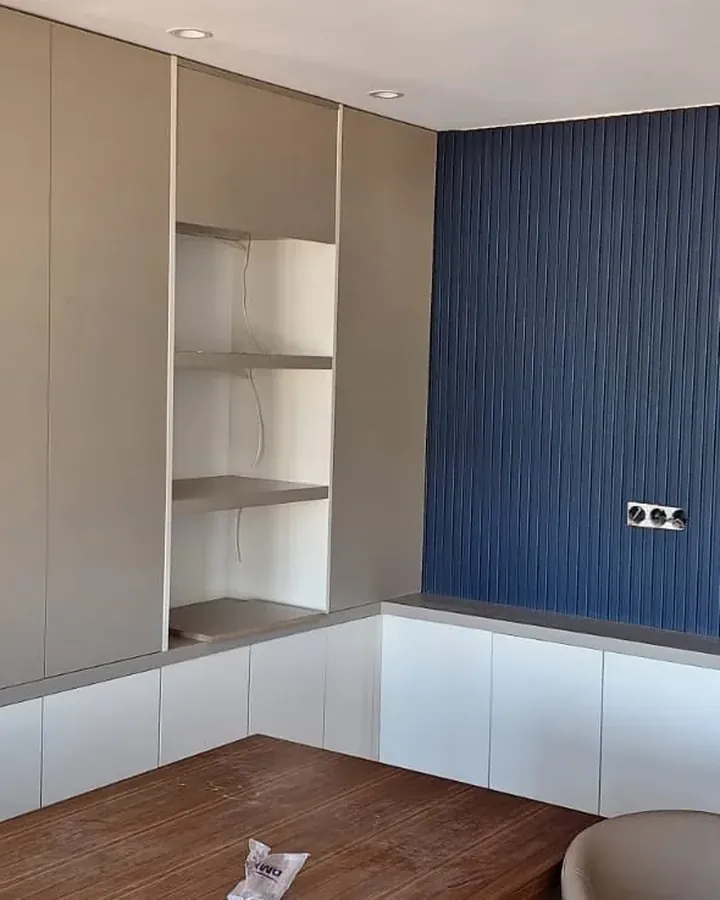
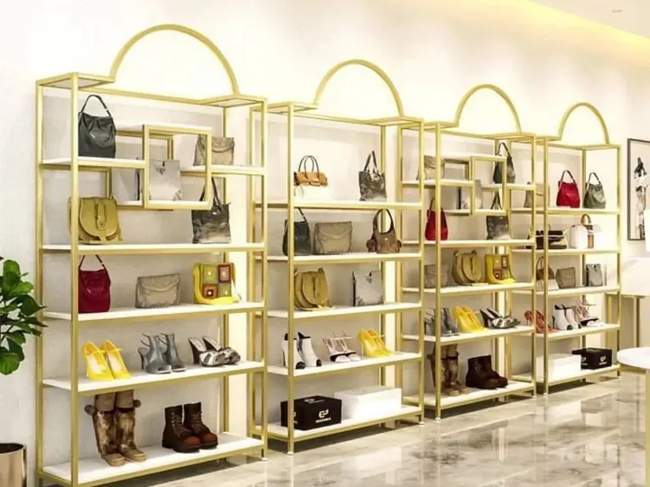
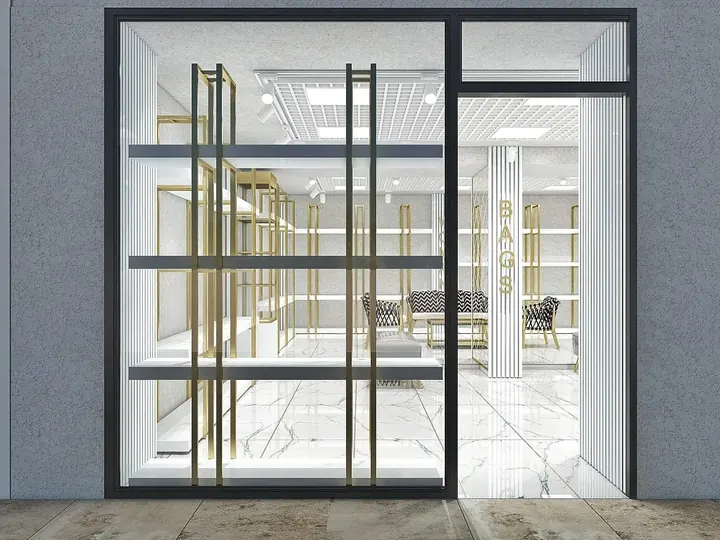

Radite li na projektima izvan Turske?
Da. Projekte na Balkanu procjenjujemo prema lokaciji, obimu, proizvodnji, transportu i montaži.
Öder Mimarlık projektuje i koordinira namještaj po mjeri, kuhinje, podove, poslovne prostore i štandove za tekstilne sajmove.
Da. Projekte na Balkanu procjenjujemo prema lokaciji, obimu, proizvodnji, transportu i montaži.
Pošaljite zemlju, približnu površinu, željenu uslugu, referentne slike i rok.
Enterijer, namještaj po mjeri, kuhinje, podovi, stambeni prostori i štandovi za tekstilne sajmove.
Öder Mimarlık projektuje i koordinira namještaj po mjeri, kuhinje, podove, poslovne prostore i štandove za tekstilne sajmove.
Öder Mimarlık projektuje i koordinira namještaj po mjeri, kuhinje, podove, poslovne prostore i štandove za tekstilne sajmove.
 01
01Životni prostori koji spajaju udobnost, boje i male detalje koji su vaši.
 02
02Pametno odlaganje, dobri materijali i čiste linije.

03Odaberimo teksturu i ton u skladu s cijelim prostorom.

04Vesele i funkcionalne sobe koje ostavljaju prostor za odrastanje.
 05
05Počinje tamo gdje pitate: „Je li ovako nešto moguće?”
Izlazak na teren, koncept, materijali i dizajn prilagođen prostoru.
Prvo vas slušamo. Zatim zajedno otkrivamo raspored, teksture i boje koji odgovaraju vašem svakodnevnom životu. Rezultat: prostor koji ne samo da lijepo izgleda, već se u njemu i lijepo osjećate.
Upoznajmo se ↗Dizajn koji prostoruSvaki projekat je nova priča. U kakvom prostoru želi živjeti vaša priča?


Fotografije su odabrane iz naše arhive s terena. Opisi prikazuju prostor na slici; ne sadrže podatke o projektima ili klijentima.
Pogledajte detalje izvođenja namještaja za trgovine, izložbene salone, kuhinje i odlaganje, svaki pod naslovom odgovarajućeg prostora.
Otvoreni smo za saradnju s brendovima namještaja, građevinskim marketima i maloprodajnim timovima na proizvodima po mjeri, izložbenim jedinicama, namještaju za trgovine i ponovljivim enterijerskim rješenjima.

Izložbene police za prodavnicu · teren Izložbeni salon · 3D dizajn
Izložbeni salon · 3D dizajn
Fasada prodavnice · 3D dizajn Plan rasporeda prodavnice · 3D
Plan rasporeda prodavnice · 3D
Hajde da zajedno procijenimo vaše enterijerske projekte u Turskoj i Evropi. Podijelite lokaciju i obim projekta, pa ćemo razgovarati o načinu rada koji vam odgovara.
Upoznajemo vaše potrebe, ukus, lokaciju i prioritete.
Zajedno utvrđujemo obim, dizajnerski pristup i sljedeće korake.
Provodimo dogovoreno rješenje u okviru utvrđenog obima i procesa.
Imate pitanja o svom projektu? Ukratko ga opišite u prvoj poruci i zajedno ćemo ga razmotriti.
Radimo na enterijerskoj arhitekturi i dizajnu prostora, namještaju i dekoraciji, kuhinjama i ormarima po mjeri, podnim oblogama, uređenju dnevne sobe, salona i dječije sobe, kao i na posebnim projektima. Obim vašeg projekta utvrđujemo na prvom sastanku.
Razmatramo vaše zahtjeve za projekte u Turskoj i Evropi. Podijelite lokaciju, obim projekta i potrebnu uslugu, pa ćemo zajedno dogovoriti odgovarajući način rada.
Lokacija projekta, prostor ili soba o kojoj razmišljate, promjena koju želite, okvirni rokovi i eventualne slike za inspiraciju dobar su početak. Ako imate budžet, navođenje budžeta pomaže da pravilno oblikujemo prijedlog.
U zavisnosti od potreba, moguće je razmotriti podršku usmjerenu na dizajn ili rad koji obuhvata dizajn i izvođenje. Obim i odgovarajuća usluga utvrđuju se na prvom sastanku.
Ukratko opišite lokaciju, veličinu i potrebe projekta. Nakon pregleda informacija, predstavit ćemo vam obim i proces izrade ponude.
Recite nam šta zamišljate. U prvom razgovoru razmotrićemo potrebe projekta i moguće sljedeće korake.